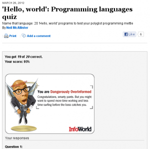

May 22, 2012 • No Comments
The sale period is over now and a total of 538 of you have downloaded the book: 488 on the US site, 44 on the UK site, and 6 on the German site. Also, the book has a new review! YAY! Not all roses though. To tell you the truth, I’m glad to know at least someone out of the roughly 1000 total people who have downloaded the book is reading it and willing to say something about their experience.
Also, an update on The Empty. The text just passed the 7000 word mark last night! I’m finding that my attempts at outlining/planning where this story should be going in more than a cursory manner are bearing no resemblance to the actual flow of the story. That feels a little frustrating when I look back at what I was planning to write about and find that instead, I have three new characters to juggle and the potential for a new side plot that. Of course, that means I have three new characters to juggle and a new side plot to figure out. Such is life.
Posted in That Which is Nameless, The Empty, Writings - Fiction
May 17, 2012 • No Comments
If you haven’t looked at the Amazon page for That Which is Nameless and don’t already have the book. NOW is the time to do so. From now through the 21st, the book is FREE! Just make sure you review it when you’re done.
UPDATE: Right thins moment, That Which is Nameless is ranked #977 out of the free books in the Kindle Store. My hope right now is that it stays there long enough for the sales graphing in Author Central to capture that value! So far, 204 people have downloaded the book free. If you’re one of them, you’re reading, this and liked the book tell your friends about it!
UPDATE 2: Wow, over the weekend a another 200+ people downloaded That Which is Nameless for free. The breakdown so far, since the start of the promotion period is, 422 on the US site, 40 on the UK site and 6 in on the German site. Today’s the last day folks! Grab the book while you can!
UPDATE 3:Last few hours guys! If you haven’t grabbed the book by midnight PST, well, you’ll just have to pay for it 😉
Posted in That Which is Nameless, Writings - Fiction
May 13, 2012 • No Comments
With a new read through and some editing also comes a new cover! The old cover was something I threw together in a very short time using the Gimp but don’t hold my bumbling against them. Let’s just say that my writing is much better than my skill with a graphics editing tool. Some of my friends, on the other hand, can do a dang good job with a mouse! This version still needs a little tweaking, at least that’s what I was told, so there may be some minor differences between what I’m posting and the final version. Still, this is definitely eye catching.
YEAH! That works a good deal better than the orange monstrosity that I’ve had on the book until now. As soon as I get the final version, I’ll be updating the book on Amazon. This version will have a significantly cleaner read to go along with the slick new cover.
For anyone following with the next book. It’s coming along, if slowly. I’ve been able to beef it up to about 4700 words now, which is just barely enough to introduce you to the story. Life, as always, can be a bit of a pain. I hope to find time and energy to get some real writing done soon. I wrote the first one during a NanoWrimo so you would think I could pull the second one off in similar time. HA!
Posted in That Which is Nameless, The Empty, Writings - Fiction
May 1, 2012 • No Comments
I’m beginning to wonder if I will ever finish editing this monstrosity. Even after what a friend has graciously edited, my own re-read of the text (just started with Chapter 2) still finds all kinds of crazy things wrong. Things like missing words here and there or paragraphs that really don’t flow at all. Some of this may have been introduced in the editing but not all. Sheesh! Does it ever end?
Posted in That Which is Nameless, Writings - Fiction
April 27, 2012 • No Comments
My editor friend just finished up the last chapters of That Which is Nameless and I have only two chapters remaining to go over. If all goes well, I hope to be rereading the book in less than a week! That means there will be a new cover and new release of the book shortly. YAY!
Posted in That Which is Nameless, Writings - Fiction
April 24, 2012 • No Comments
Here’s an updated version of my MySQL backup script from a while back. I’m playing with a syntax highlighter to make things a little easier to read. Eventually I’ll get this junk over on github.
Posted in Programming
April 20, 2012 • No Comments
I’ve been thinking and I’m pretty sure it’s about time to move anything I care about off of kc5vzm.com and migrate it over here. There are a few legacy things that I still have hanging around over there and those will be moved as I find the time. We’ll see how this works out though.
Posted in Random Thoughts
March 26, 2012 • No Comments
A little quiz I found that seemed fun.

You can find the quiz itself at ‘Hello World’: Programming Language Quiz. How did you do?
Posted in Programming
February 23, 2012 • No Comments
Well, I’ve been handed an edited version of chapter two in That Which is Nameless. This process can be a bit bloody to deal with but should be worth it. If nothing else, the book will be better off for having had some other eyes on the text.
Posted in That Which is Nameless, Writings - Fiction
February 22, 2012 • No Comments
There are times that I wish there were more hours in the day. Then I realize that, if there were additional hours, I would just find more inane things to fill those hours with. Right now, I just wish I were headed to bed rather than not. In fact, I might just wrap up what I was working on and do just that.
Posted in Random Thoughts


{kind=link}
{kind=link}
{kind=link}